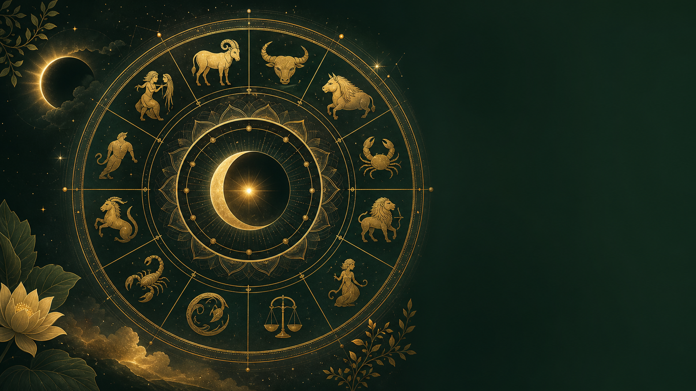
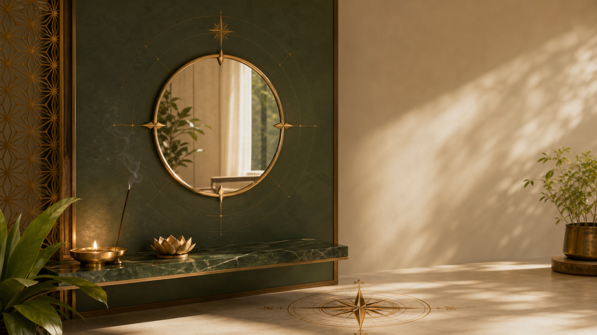

Ancient sight for the decisions ahead
Authentic, calculation-based spiritual guidance from Ddeepa Khanna Shah, Jyotish Aacharya and Reiki Aacharya, with more than a decade of dedicated practice.
Ddeepa Khanna Shah
A dedicated Vedic astrology practitioner offering authentic guidance rooted in traditional wisdom. Her work brings together Jyotish, numerology, Vastu, Tarot, face reading, Reiki and spiritual-energy consultation.
Every consultation is personal, confidential and designed to turn spiritual insight into practical direction.
Choose your
rashi
Select any static gold rashi symbol to read this month’s automatically refreshed guidance.
Select a rashi
This monthYour monthly guidance will appear here.
The guidance explains how the month can support you and what practical message it carries. Personal outcomes require a complete birth-chart consultation.
Two birth dates.
One shared rhythm.
Enter both dates of birth to calculate each person’s Mulank and Bhagyank, then explore the relationship’s strengths, friction points and overall compatibility.
Your calculation will open on a private report page with the score, strengths, challenges and locked personalised guidance.
Ask with intention.
Draw with stillness.
Write one clear question. The deck begins shuffling only when you choose to draw.
Six paths to clarity
Open any service to see its dedicated guidance, detailed offerings and related articles.
Kundli Analysis
Birth-chart interpretation for life, timing and decisions.
Open service page →Numerology Analysis
Birth-date and name vibrations translated into practical insight.
Open service page →Vastu Analysis
Spatial guidance for homes, businesses, land and interiors.
Open service page →Tarot Reading
Focused perspective for relationships, career and decisions.
Open service page →Face Reading
Traditional observation of features, character and tendencies.
Open service page →Paranormal Consultation
Confidential spiritual support and negative-energy cleansing.
Open service page →Research-led wisdom, clearly labelled
Explore 56 original articles across Rashifal, Vedic astrology, Mulank, numerology, Vastu, compatibility and spiritual wellbeing.

August 2026 Horoscope: Eclipse-Season Rashifal
Read the complete guide →
Mirror Placement: Tradition, Light and Everyday Safety
Read the complete guide →From Deepa Khanna on YouTube
18.9K subscribers · 939 videos
Astrology, Vastu, Numerology, Tarot and spiritual remedies from the official channel.

Apna Mulank Dekhein Aur Shivling Par Ye Chadhayein

This One Mistake in Your Home Is Ruining Family Peace

How Tarot Cards Reveal Hidden Emotions and Secrets

Remedies to Go from Rags to Riches

If You Want a Blockage-Free Life, This Video Is for You

Learn Astrology from Deepa Khanna Shah, Part 1
Apna Mulank Dekhein Aur Shivling Par Ye Chadhayein
This One Mistake in Your Home Is Ruining Family Peace
Guidance remembered
Names are changed to protect client privacy.
★★★★★“Your consultation and Vastu remedies helped our family and moved long-stuck projects forward.”
Kavita Shah
★★★★☆“Your calculations were clear and practical. We will continue consulting you for future growth.”
Rohan Mehta
★★★★☆“Your Vastu tips brought noticeable positivity and peace into our home.”
Neha Desai
★★★★★“The guidance was accurate and the remedies were simple yet powerful.”
Amit Patel
SIAOS in Surat
UG-16, Westfield MallGhod Dod Road
Surat – 395001
Gujarat, India
+91 91735 69555
+91 84910 12346
Reach SIAOS
Connect with us on Instagram, Facebook, YouTube or WhatsApp.